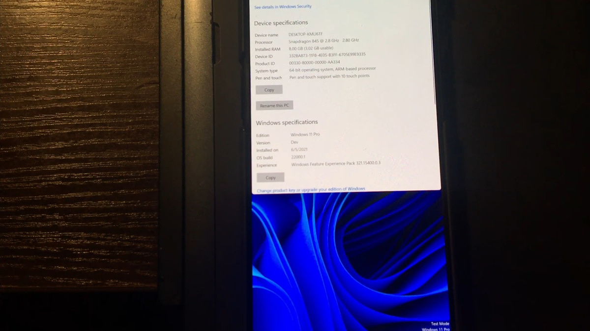

ast week, Microsoft officially unveiled Windows 11. While it won’t be available to the general public until the end of this year, the first preview build of Windows 11 is already out to Windows Insiders. Alongside the x64 build that most users have installed, there’s also an ARM64 build for Windows on ARM devices like the Surface Pro X. The ARM64 build is intended to be installed on supported Qualcomm processors, but that’s not stopping tinkerers from using it to port Windows 11 to unsupported devices. A few days ago, we saw developers manage to get Windows 11 running on a Lumia 950 XL and Raspberry Pi 4. Now, a few developers have booted up Windows 11 on an Android phone. Some of the developers behind the Renegade Project — a team that ports EDK2 to various platforms — successfully got Windows 11 booting on the OnePlus 6 and OnePlus 6T. One of the team members shared a video that we’ve embedded below which showcases Windows 11 on ARM being installed on a OnePlus 6T. The video shows user edi194 using a OnePlus 6T that’s already running Windows 10 on ARM. The user then proceeds to flash the preview build of Windows 11 on ARM, and although installation does take quite a while, the phone does manage to successfully boot up the new OS in the end. As the user reports, features like touchscreen, USB, and GPU (partially) are working. However, Wi-Fi, Bluetooth, and audio over speaker seem to be broken. It’s far from perfect, but seeing Microsoft’s brand-new, full-fledged desktop OS running on a smartphone designed to run Android is cool nonetheless. The team has also put together a spreadsheet of games they have been testing on the OnePlus 6/6T. Surprisingly, the OnePlus 6T can handle quite a few PC titles, including GTA IV, CS:GO, Far Cry, Minecraft, Need for Speed: Most Wanted, SimCity 5, and more. This is, of course, not the first time we have seen someone running Windows on a Snapdragon 845-powered device. Back in 2019, Bas Timmer (who goes by the username NTAuthority) managed to boot Windows 10 on a OnePlus 6T as well as a Google Pixel 3. If you’re interested in learning more about the project and maybe try booting up Windows on your Snapdragon 845-powered device yourself, you can learn more about the Renegade Project from its website. Meanwhile, you can find its GitHub page here.
